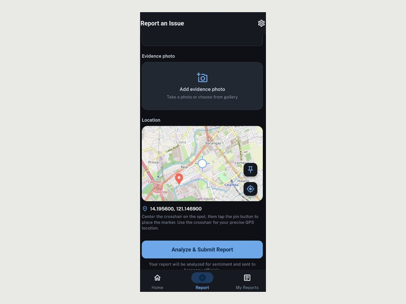
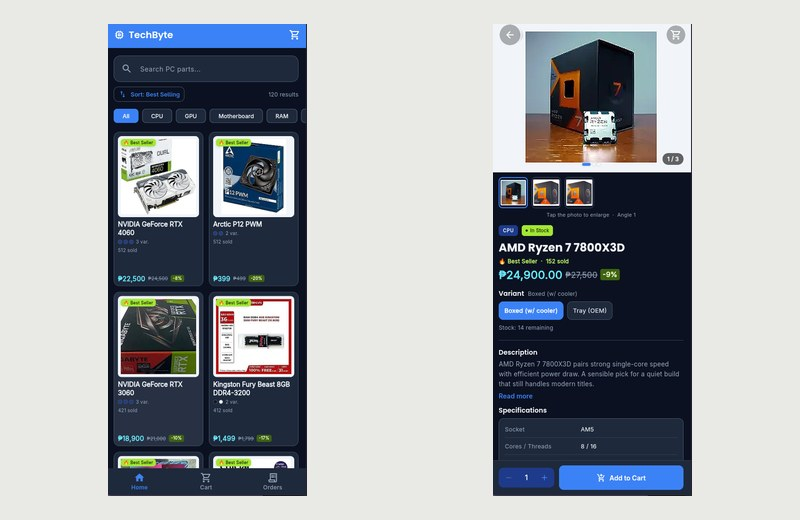
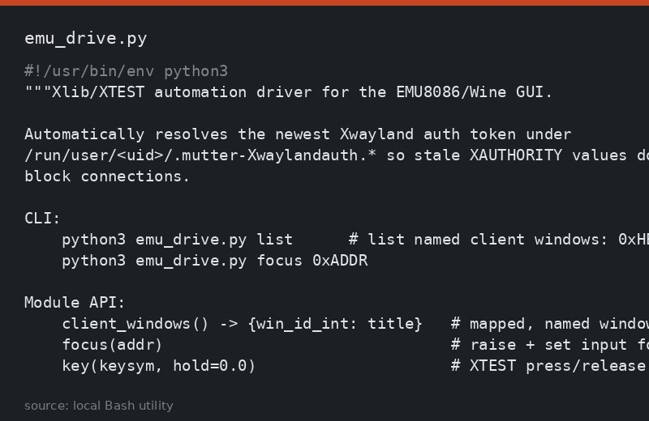

Portfolio
Two Android apps and one Linux tool. Choose a category to narrow the list, then open any one for details.



No project in this category yet. Try another filter.
Two Android apps and one Linux tool. Choose a category to narrow the list, then open any one for details.



No project in this category yet. Try another filter.